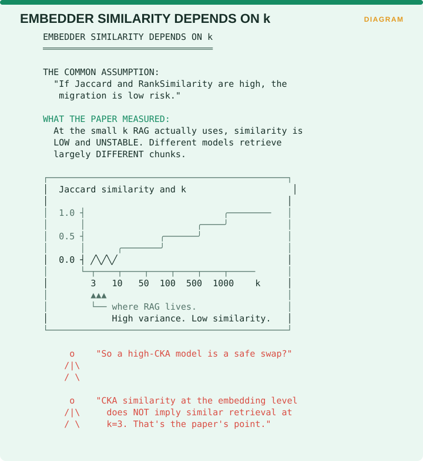

Measuring Retrieval › B.2 Representation Drift - the CKA family
B.2 Representation Drift - the CKA family
One-line: Three complementary measures of whether two embedding models, or the same model at two points in time, actually behave the same way.
Facets: Integrity/Drift | corpus & query | free | R | EMERGING VERIFIED Source: Caspari, Ghosh Dastidar, Zerhoudi, Mitrović & Granitzer, Beyond Benchmarks: Evaluating Embedding Model Similarity for RAG Systems, CEUR-WS Vol-3784 · arXiv:2407.08275
The problem it solves
Sooner or later you will want to change your embedding model, because a newer one scores better on a public leaderboard or because the one you are running is being deprecated. The question you need answered before you do it is whether the new model will retrieve the same things the old one did, and the honest answer is that most teams have no instrument for asking.
Every practitioner blog on RAG drift recommends some version of tracking the mean cosine distance from a baseline centroid and alerting above 0.05. Those thresholds have no published validation behind them. They are folklore with a number attached. This section supplies the actual instruments.
The three measures

CKA, meaning Centered Kernel Alignment, asks whether two embedders represent text similarly by comparing the geometry of the representations themselves. Jaccard asks whether they retrieve the same documents, by taking the overlap of the two result sets while ignoring order. RankSimilarity asks whether they retrieve those documents in the same order.
The table in the figure works through the combinations. High on all three means the two models are genuinely the same. Low CKA with high Jaccard and high RankSimilarity means different underlying mathematics producing the same behaviour, which is safe to swap. High CKA with low Jaccard means similar geometry producing divergent results, which needs investigating. High CKA and high Jaccard with low RankSimilarity means the same documents arriving in a new order, which matters a great deal for RAG because position within the prompt affects how the material gets used.
That third row is the one to internalize. Two embedders can be geometrically similar and behaviourally different, so representation similarity does not imply retrieval similarity, which is exactly why one number is not enough.
B.2.1 What the measurements actually show
The study behind these instruments covered 19 embedding models across five BEIR datasets, using CKA for pairwise comparison of the embeddings themselves and Jaccard and rank similarity for the retrieval behaviour they produce at top-k. It was built to help with model selection, by identifying clusters of similar models, and its results carry a warning for anyone planning a migration.
Comparing embeddings with CKA generally showed intra- and inter-family clusters across datasets. These clusters also appeared when evaluating top-k retrieval similarity with large k values. Scores for low k values, which would commonly be chosen in RAG systems, show high variance and much lower similarity, especially on larger datasets.
More starkly, on the two larger datasets, FiQA-2018 and TREC-COVID, most models retrieve almost completely distinct text chunks. Only one cluster, made up of bge, UAE and mxbai, retained notable similarity, and the rest showed moderate to low similarity at best.

The common assumption is that high Jaccard and RankSimilarity make a migration low risk. What the measurements show is that at the small k RAG actually uses, similarity is low and unstable, with different models retrieving largely different chunks. The curve in the figure makes the shape clear: Jaccard similarity is near zero and highly variable at k values of 3 and 10, rises through k of 50 and 100, and only approaches 1.0 out past k of 500. RAG lives at the left-hand end of that curve, in the high-variance, low-similarity region.
So a model with high CKA is not a safe swap, because similarity at the level of the embedding geometry does not imply similar retrieval at k=3.
The authors add a caveat that strengthens the conclusion rather than weakening it. Their datasets are comparatively small, while real RAG systems operate over millions of embeddings, so if larger datasets produce lower retrieval similarity then real-world divergence may exceed what they were able to measure.
B.2.2 What to do about it
| Instinct | What to do instead |
|---|---|
| Read high Jaccard/RankSimilarity as a low-risk migration | Expect low similarity at RAG-typical k. Low similarity is the default, not the alarm. |
| Use the three measures as a generic drift stack | Calibrate against your own baseline, since cross-model similarity is inherently low |
| Treat CKA as the primary instrument | Jaccard and RankSimilarity at your production k are the operative measures. CKA describes representation geometry, which does not transfer to retrieval behaviour at small k |
Every embedder swap is therefore a high-risk change by default, so do not reason from leaderboard proximity or from CKA. Measure Jaccard and RankSimilarity at your actual k, on your actual corpus, before migrating anything, because two models that look interchangeable on MTEB may retrieve almost completely distinct chunks for your queries.
This is also the strongest argument for freezing a baseline now, while you still can.
B.2.3 A consequence for everything downstream
If different embedders retrieve largely different chunks at small k, then any evaluation number computed under one embedder is not comparable to the same number computed under another. That applies to drift metrics, to faithfulness, to the CUE quadrants and to every downstream measure in this book. Embedder version therefore belongs in your experiment metadata alongside judge version.
Measuring Retrieval · Madhava Gaikwad · First edition, September 2026